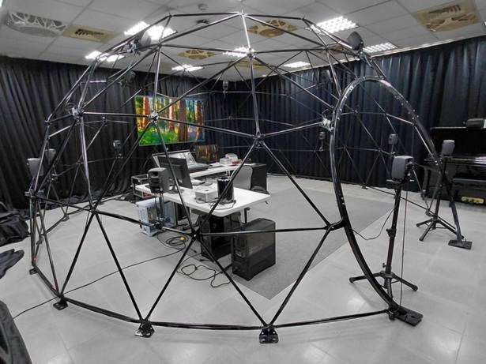
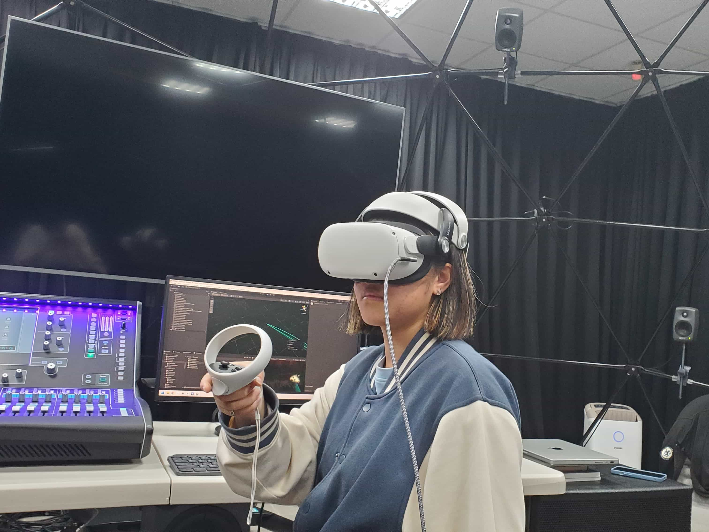
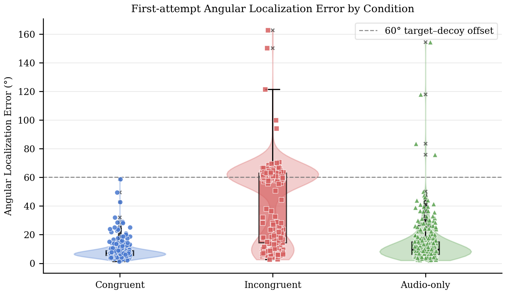
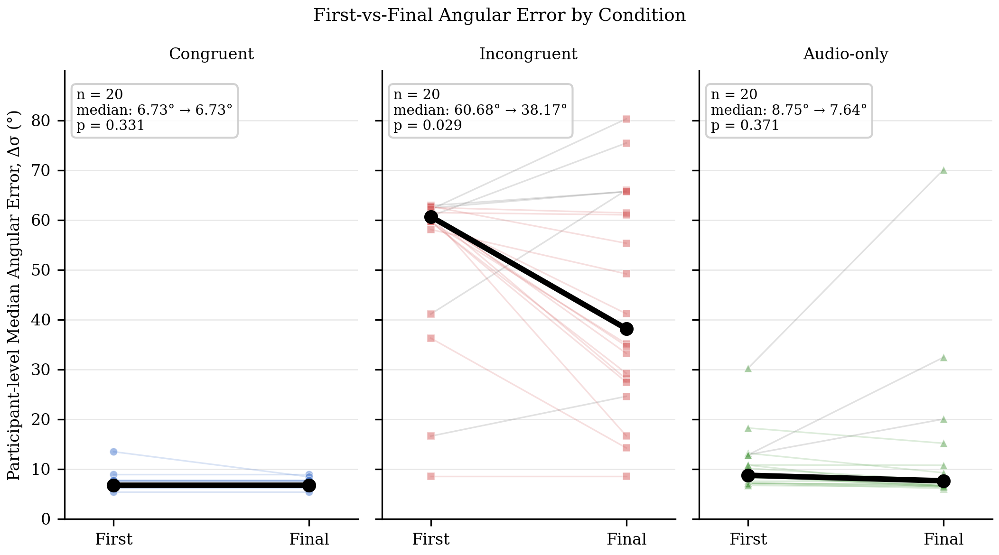
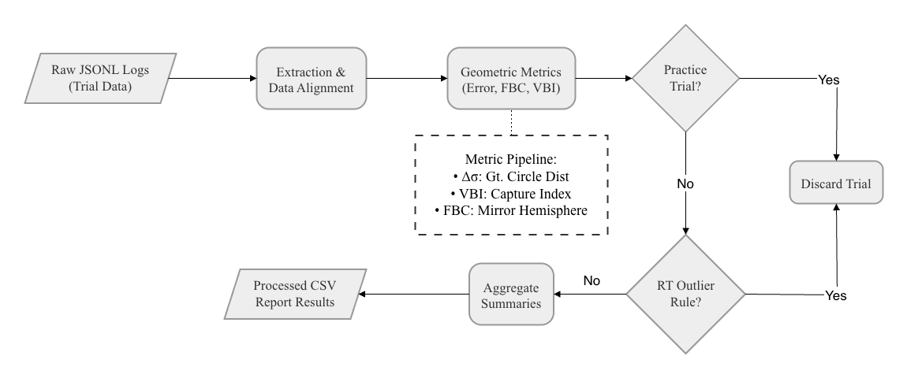

This research introduced a decoupled tracking paradigm to isolate visual
capture from post-pointing head correction in virtual reality. When visual cues and 3D
sounds were spatially out of alignment, the brain chose vision: participants pointed
directly at the decoy rather than the true sound, and processing this sensory conflict
delayed their median response times by over 1.5 seconds.
Experimental Setup & Telemetry
The experiment was built in Unity 3D and conducted in a professional sound laboratory.
Continuous telemetry captured head orientations and hand pointer vectors, translating
real-time Cartesian inputs to spherical space to analyze cross-modal interference across
three primary conditions:
Condition 1 // Congruent
No Conflict Baseline
The sound source and the visual target align perfectly, establishing the control
baseline for spatial accuracy.
Condition 2 // Incongruent
Audiovisual Conflict
The ground-truth sound source is kept completely invisible, while a salient visual
decoy is displayed with a static 60°–65° spatial misalignment.
Condition 3 // Audio-Only
Pure Acoustic Target
The virtual scene is rendered as a uniform neutral dark background with
no visual cues, forcing pure auditory localization.

FIG. A // 16-CHANNEL LOUDSPEAKER ARRAY
Anechoic reproduction layout satisfying the spatial
resolution requirements for third-order Ambisonic decoding.

FIG. B // DECOUPLED ALIGNMENT TASK
Participant maintaining visual fixation on a decoy while
pointing to the actual sound source by hand.
Empirical
Findings & Data Pipeline
Inferential tests (repeated-measures ANOVA and Wilcoxon signed-rank tests) demonstrated that
high-fidelity audio cannot shield spatial judgment from visual bias. However, tracking
multi-attempt sequences revealed that participants partially correct their pointing errors
while conflict remains active.

FIG. C // ANGULAR LOCALIZATION ERROR
Incongruent trials inflated median error to 60.35°, showing
the massive bias towards the visual decoy compared to Congruent (6.90°) and
Audio-only (9.62°).

FIG. D // SPATIAL CORRECTION DYNAMICS
Tracking first-to-final pointing attempts revealed partial
correction trajectories, showing users attempting to resolve the active
conflict.

FIG. E // COGNITIVE RESPONSE TIME COST
Resisting visual capture (Incongruent) and searching without
visual cues (Audio-only) both increased median response times by over 1.5
seconds
compared to Congruent trials.

FIG. F // TELEMETRY DATA WORKFLOW
Custom data processing pipeline parsing raw HMD/controller
coordinates to spherical angles, applying MAD outlier filtering, and performing
statistical tests.